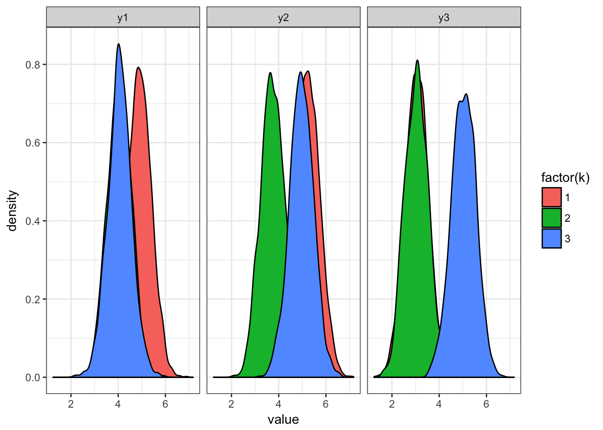

In this homework we will write a gaussian mixture estimator and apply it to data. I recommend you to use Rstudio where you might need to dowload separatly R.
First time in RStudio, you need to install some packages:
install.packages(c('data.table','ggplot2','lattice')) # only the first time!Here are some useful materials:
#some imports
require(gtools)
require(data.table)
require(ggplot2)
require(reshape)
require(readstata13)
require(MCMCpack)First we write a mixture EM estimator for a gaussian mixture with K components. Each components has its own mean \(\mu_k\) and variance \(\sigma_k\). Each component also has a proportion that we will call \(p_k\).
The data will be a sequence of wages, we only need consecutive, so we will focus on that. We can write the posterior probability for a given \(k\) given \(Y_1,Y_2,Y_3\) and taking our current parameters \(p_k,\mu_{kt},\sigma_{kt}\)
\[ \omega_{ik} = Pr[k|Y_{i1},Y_{i2},Y_{i3}] = \frac{p_k \prod_t \phi(Y_{it},\mu_{kt},\sigma_{kt}) }{ \sum_{k'} p_{k'} \prod_t \phi(Y_{it},\mu_{k't},\sigma_{k't})} \]
this gives us the posterior probabilities that we can use in the maximization step. Some guidance on computing the likelihood on the computer.
lognormpdf <- function(Y,mu=0,sigma=1) {
-0.5 * ( (Y-mu) / sigma )^2 - 0.5 * log(2.0*pi) - log(sigma)
}
logsumexp <- function(v) {
vm = max(v)
log(sum(exp(v-vm))) + vm
}And here is an example on I would implement it where A are the means and S are the standard deviations.
tau = array(0,c(N,nk))
lpm = array(0,c(N,nk))
lik = 0
for (i in 1:N) {
ltau = log(pk)
lnorm1 = lognormpdf(Y1[i], A[1,], S[1,])
lnorm2 = lognormpdf(Y2[i], A[2,], S[2,])
lnorm3 = lognormpdf(Y3[i], A[3,], S[3,])
lall = ltau + lnorm2 + lnorm1 +lrnorm3
lpm[i,] = lall
lik = lik + logsumexp(lall)
tau[i,] = exp(lall - logsumexp(lall))
}Given our \(\omega_{ik}\) we can procede to update our parameters using our first order conditions on the \(Q(\theta | \theta^{(t)})\) function.
I will let you write the code to update the \(pk\) term. For the mean and variance. My favorite way of implementing is to stack up the \(Y_{it}\) and duplicate them for each \(k\). Something along this lines:
DY1 = as.matrix(kronecker(Y1 ,rep(1,nk)))
DY2 = as.matrix(kronecker(Y2 ,rep(1,nk)))
DY3 = as.matrix(kronecker(Y3 ,rep(1,nk)))
Dkj1 = as.matrix.csr(kronecker(rep(1,N),diag(nk)))
Dkj2 = as.matrix.csr(kronecker(rep(1,N),diag(nk)))
Dkj3 = as.matrix.csr(kronecker(rep(1,N),diag(nk))) then you easily recover the means and variances using the posterior weights with the following expression:
rw = c(t(tau))
fit = slm.wfit(Dkj1,DY1,rw)
A[1,] = coef(fit)[1:nk]
fit_v = slm.wfit(Dkj1,resid(fit)^2/rw,rw)
S[1,] = sqrt(coef(fit)[1:nk])where slm.wfit is in the SparseM package. Note how you have to scale the residuals when using this function. You can edit this code to recover all means and variances at once!
Write up a function that computes the \(Q\) and \(H\) function we talked about in class. Both function must decrease at every step. Note that this function needs to take in both the previous and new parameters.
Note however that both functions are very simple expression of lpm and taum. If you compute them under \(\theta^(t+1)\) and \(\theta^(t)\) they are given by:
Q1 = sum( ( (res1$taum) * res1$lpm ))
Q2 = sum( ( (res1$taum) * res2$lpm ))
H1 = - sum( (res1$taum) * log(res1$taum))
H2 = - sum( (res1$taum) * log(res2$taum))you then only need to check that they both changed in the correct direction!
Here is a simple function that will generate random data for you to estimate from. Your code should take a starting such model structure and update its parameters. This way we can easily check whether it matches in the end.
model.mixture.new <-function(nk) {
model = list()
# model for Y1,Y2,Y3|k
model$A = array(3*(1 + 0.8*runif(3*nk)),c(3,nk))
model$S = array(1,c(3,nk))
model$pk = rdirichlet(1,rep(1,nk))
model$nk = nk
return(model)
}and here is code that will simulate from it:
model.mixture.simulate <-function(model,N,sd.scale=1) {
Y1 = array(0,sum(N))
Y2 = array(0,sum(N))
Y3 = array(0,sum(N))
K = array(0,sum(N))
A = model$A
S = model$S
pk = model$pk
nk = model$nk
# draw K
K = sample.int(nk,N,TRUE,pk)
# draw Y1, Y2, Y3
Y1 = A[1,K] + S[1,K] * rnorm(N) *sd.scale
Y2 = A[2,K] + S[2,K] * rnorm(N) *sd.scale
Y3 = A[3,K] + S[3,K] * rnorm(N) *sd.scale
data.sim = data.table(k=K,y1=Y1,y2=Y2,y3=Y3)
return(data.sim)
} model = model.mixture.new(3)
data = model.mixture.simulate(model,10000,sd.scale=0.5) # simulating with lower sd to see separation
datal = melt(data,id="k")
ggplot(datal,aes(x=value,group=k,fill=factor(k))) + geom_density() + facet_grid(~variable) + theme_bw()
Get the prepared data from Blundell, Pistaferri and Saporta. To load this data you will need to install the package readstata13. You can do that by running:
install.packages('readstata13')then you can load the data
require(readstata13)
data = data.table(read.dta13("/Users/florian.oswald/Dropbox/teaching/ScPo/labour2017/homeworks/data/AER_2012_1549_data/output/data4estimation.dta"))we start by computing some kind of residual wage
fit = lm(log(log_y) ~ year + marit + state_st ,data ,na.action=na.exclude)
data[, log_yr := residuals(fit)]we then want to create a data-set in the same format as before. We can do this by selecting some given years and using the cast function.
# extract lags
setkey(data,person,year)
data[, log_yr_l1 := data[J(person,year-2),log_yr]]
data[, log_yr_l2 := data[J(person,year-4),log_yr]]
# compute difference from start
fdata = data[!is.na(log_yr*log_yr_l1*log_yr_l2)][,list(y1=log_yr_l2,y2=log_yr_l1,y3=log_yr)] This gives 4941 to estimate your model!
Here we want to make things more interesting and consider the following model:
\[ Y_{it} - \rho Y_{it-1} | k \sim N(\mu_{kt},\sigma_{kt}) \]
The code does not need any modicification if we do things conditional on \(\rho\). You just need to feed in the wages differences out already by rho. You run your algorithm on \(Y_2 - \rho Y_1\), \(Y_3 - \rho Y_2\) and \(Y_4 - \rho Y_3\).
How to get \(\rho\) ? We can pick it using covariance restrictions! For now, just use a reasonable value for instance 0.6 . Here is the code to prepare your data:
# extract lags
setkey(data,person,year)
data[, log_yr_l3 := data[J(person,year-2),log_yr]]
# compute difference from start
fdata = data[!is.na(log_yr*log_yr_l1*log_yr_l2)][,list(y1=log_yr_l3,y2=log_yr_l2,y3=log_yr_l1,y4=log_yr)]